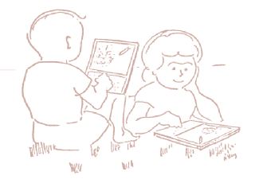

COLA/Flash Workspace
 This is a COLA/Flash workspace. You can evaluate any lisp programs in the document. Select each expression below and click [Print It] or [Do It] button on bottom of the screen. (+ 3 4) (print "Hello, World!\n") A page may have a hyper link. You use a jump function to go to another page. The [Home] button always let you back to this page. Select next expression and click [Do It] button. (jump "Overview.html")